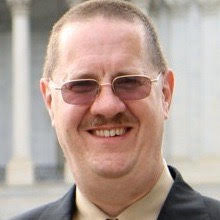
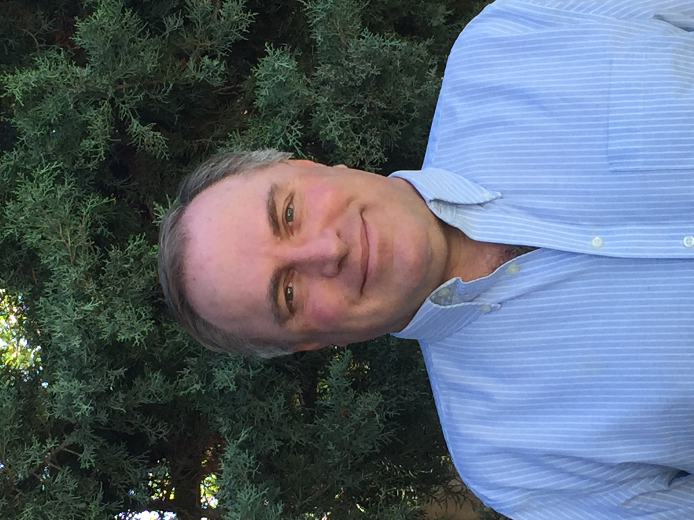
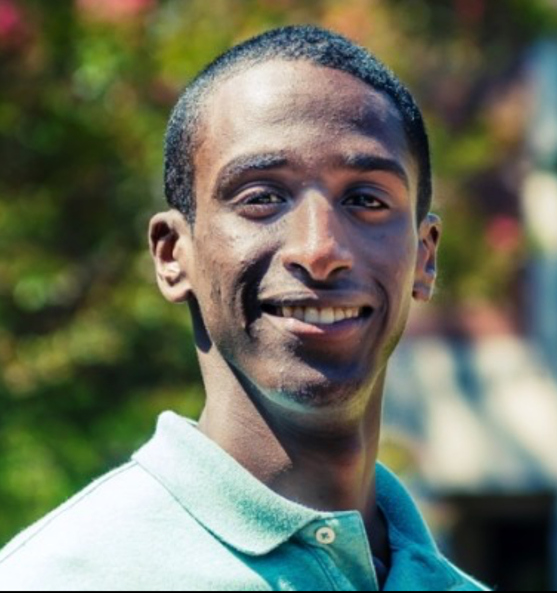

Ved is a passionate student dedicated to supporting the success of non-profit organizations. He volunteers his time and expertise to various non-profits where he assists with financial management and tax preparation.

Jeff has been a high school computer science teacher for 33 years, and a free software activist for almost as long. His overriding passion is working for social justice, and he hopes SJC can play an active role in using ICT to serve humanity.

Dr. Stephen Hubbard brings over 33 years of experience to Social Justice Computing Board of Directors across a number of technical fields as well as education. Dr Hubbard also mentors U.S. and African students in STEM.
Issac Zawolo is an advocate for social justice. He was born and raised in Liberia. From college to present he has been an activist always speaking out for those who are opressed. Lastly, he has been an educator for over 40 years bringing in a multitude of experience.

Sahnun is a professional software developer. In high school, he founded WakeUpSomalia which aimed to use technology to expand education access.
Vrishin is a dedicated college student passionate about creating affordable, impactful solutions. Committed to advancing nonprofit development, he is an advocate for sustainable practices that inspire long-term growth and meaningful change in communities